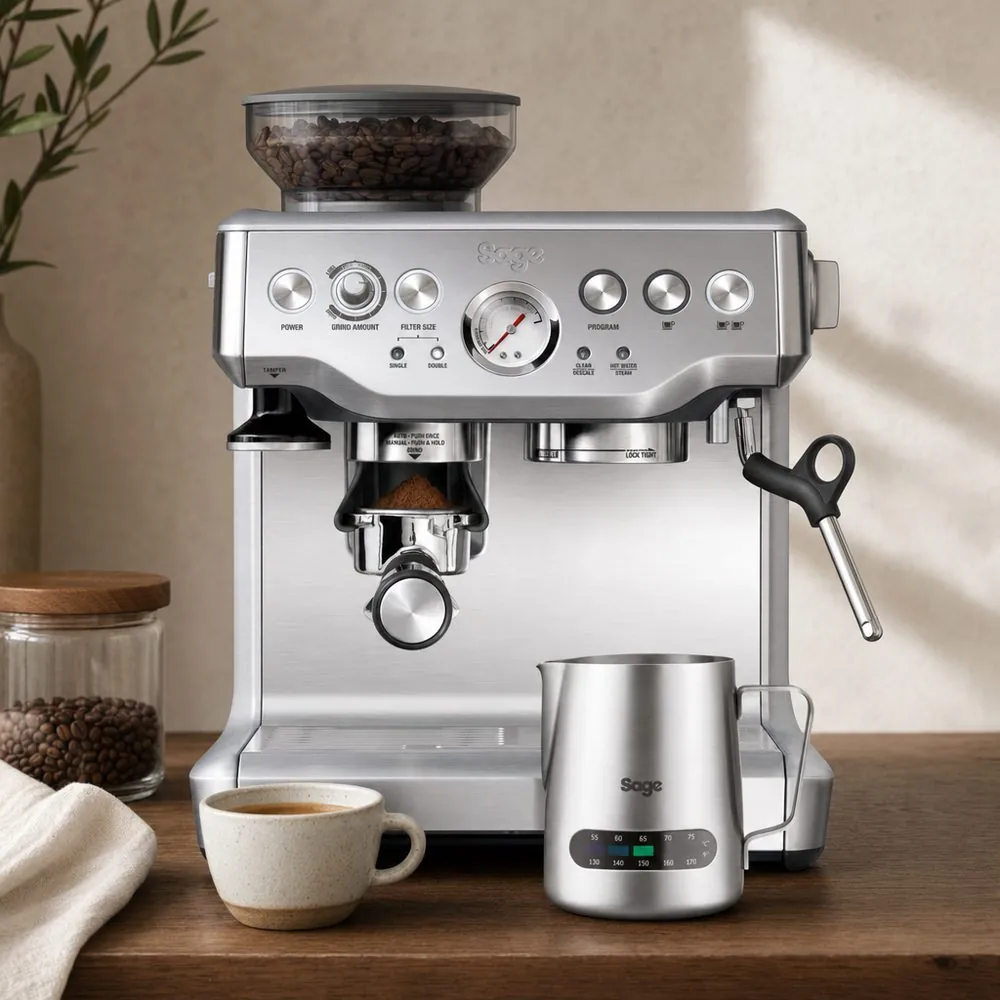

Mühle, Maschine und Milchschaum in einem Gehäuse für unter 500 €: zu schön, um wahr zu sein? Ein ehrlicher Blick auf das meistverkaufte Komplettpaket der Mittelklasse: was es kann, wo es an Grenzen stößt und was Besitzern erst nach Wochen auffällt.

Der Lieferumfang erklärt den Verkaufserfolg: Maschine mit integriertem Kegelmahlwerk, Metall-Tamper, Ein- und Doppelwandsiebe, Milchkännchen, Razor-Dosierhilfe. Es fehlt buchstäblich nichts außer Bohnen. Genau dieser Punkt entscheidet die Budgetrechnung: Während Rancilio Silvia oder Gaggia Classic erst mit separater Mühle komplett sind (Preise im Mühlen-Vergleich), steht die Barista Express ohne Zukauf betriebsbereit auf der Arbeitsplatte.
Das gebürstete Edelstahlgehäuse wirkt deutlich wertiger als die Einsteigerklasse, mit 23 cm Breite und gut 10 kg ist sie aber ein sichtbares Küchenmöbel. Nach Monaten im Alltag zeigen Nutzerberichte ein stabiles Bild; der bekannteste Verschleißpunkt über Jahre ist das Mahlwerk-Innenleben. Ersatzteile und Anleitungen sind dank riesiger Community aber überall verfügbar.
Bohnen oben rein, Siebträger in die Halterung, automatische Dosierung: Vom Impuls „Ich will einen Espresso" bis zur Tasse vergehen keine zwei Minuten. Das Kegelmahlwerk mit 16 Stufen (plus interner Feinjustage) reicht für 90 % aller Bohnen völlig aus. Die Grenzen zeigen sich bei sehr hellen Röstungen und beim Wechsel zwischen Bohnensorten: Die Stufen sind gröber gerastert als bei guten Einzelmühlen, und im Mahlwerk verbleibt immer etwas Restkaffee der vorherigen Sorte. Wer täglich dieselbe Bohne trinkt, merkt davon nichts; Vieltester werden irgendwann eine separate Mühle wollen.
Die PID-geregelte Thermocoil-Heizung hält die Brühtemperatur zuverlässig. Das ist der Hauptgrund, warum die Express konsistenter arbeitet als die teurere Gaggia Classic ohne PID. Mit dem Manometer auf der Front lernt man schnell, Mahlgrad und Dosis zu treffen: Zeiger im grauen Bereich, rund 25 bis 30 Sekunden Bezugszeit, fertig. Das Ergebnis ist ein Espresso mit stabiler Crema und sauberer Balance, der im Blindvergleich viele deutlich teurere Setups ohne gute Mühle schlägt. Die Pre-Infusion mit ansteigendem Druck verzeiht zusätzlich kleine Fehler bei der Verteilung.
Anders als bei der Bambino Plus gibt es hier keinen Automatikmodus; geschäumt wird von Hand. Die Lanze liefert dafür genug Druck für feinporigen Mikroschaum und ist gutmütig genug, dass die Lernkurve bei ein bis zwei Wochen liegt. Einschränkung des Einkreiser-Prinzips mit Thermocoil: Espresso und Milch entstehen nacheinander, mit kurzer Umschaltpause. Für ein, zwei Cappuccini morgens irrelevant; wer regelmäßig vier Milchgetränke hintereinander macht, spürt den Unterschied zur Dualboiler-Klasse (Premium-Vergleich).
Tägliches Ausklopfen und Spülen ist Routine; dazu kommen wöchentliches Blindsieb-Rückspülen (Tabs liegen bei) und die regelmäßige Mahlwerksreinigung. Im Mahlwerk sammelt sich Kaffeemehl, das bei Vernachlässigung ranzig wird und den Geschmack kippt. Die Wasserhärte ist der wichtigste Langlebigkeitsfaktor: mit Filter oder geeignetem Flaschenwasser arbeiten, sonst wird Entkalken zur Daueraufgabe. Realistischer Pflegeaufwand: 10 Minuten pro Woche plus 20 Minuten pro Monat. Alle Schritte aus der Anleitung stehen auf der Seite Sage Barista Express reinigen und entkalken.
Kaufen, wenn du mit einem Budget um 500 € das maximale Gesamtergebnis willst, täglich ein bis drei Getränke machst und keine Lust auf Geräte-Kombinatorik hast. Nicht kaufen, wenn du häufig Bohnensorten wechselst oder primär sehr helle Röstungen trinkst (→ separate Mühle + Rancilio Silvia) oder Milchgetränke im Serienbetrieb brauchst (→ Dualboiler-Klasse).
| Technische Daten | Sage Barista Express (SES875) |
|---|---|
| Heizsystem | Thermocoil mit PID-Regelung |
| Mahlwerk | integriertes Kegelmahlwerk, 16 Stufen + Feinjustage |
| Siebträger | 54 mm Edelstahl, Ein- & Doppelwandsiebe |
| Milchschaum | manuelle Profi-Dampflanze |
| Wassertank | 2,0 Liter |
| Maße (B×T×H) | ca. 23 × 31 × 40 cm |
| Stromkosten pro Jahr (Schätzung) | ca. 7 € (ca. 19 kWh) |
| Preis* | ab 484,99 € |
*Marktpreis Deutschland, Preisprüfung 17. November 2026. Tagesaktuellen Preis beim Händler prüfen. Amazon-Preise zeigen wir nicht; der Amazon-Link führt zum aktuellen Angebot. Stromkosten: Schätzung für 2 Espresso und 1 Cappuccino pro Tag, Maschine nur dafür eingeschaltet, 37 ct/kWh (Methode: Stromverbrauch & Kosten).
Kein anderes Setup liefert für unter 500 € frisch gemahlenen, PID-stabilen Espresso plus Milchschaum aus einem Gerät. Die Grenzen des integrierten Mahlwerks sind real, aber sie betreffen Enthusiasten, nicht die Zielgruppe.